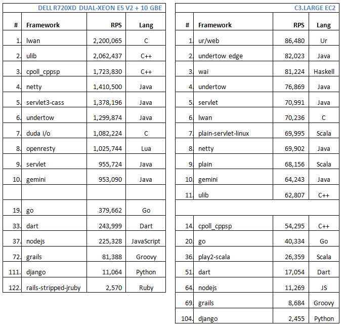

翻译自InfoQ的 Web Frameworks Benchmark 2015
2014年TechEmpower发布了各种web框架做的benchmark结果 (参看我上一篇文章),这些web框架既包括web平台，还包括微框架(micro-frameworks). 一年过去了，TechEmpower又发布了新的测试结果， 可以看到前十名的web框架的性能又有了重要的变化。为了挑战最快的web框架比赛， 133位贡献者为测试框架提交了2,835 git commits, 一些框架显著提升了他们的RPS(responses per second),而其它的框架也得到了相应的提升。
本年度的benchmark测试测试了大约125个web框架， 运行在两种硬件环境上： Xeon E5 (和去年一样)和 Amazon C3.Large (Xeon E5-2680 2-vCPU 处理器，去年是M1.Large)。 所有的测试都运行在Linux上。 Benchmark测试执行不同类型的请求: 一个“Hello, World!” JSON 文本, 一条数据库记录, 多条数据库记录, 数据库中的所有记录，更新数据库记录，一个“Hello, World!”纯文本. 主要测试web框架对不同的测试类型的响应的不同。这里列出了前10名web框架以及一些知名框架对于JSON 请求的benchmark。

这里列出了我们的观察结果：
- 在同样的硬件上，最好的框架的RPS是去年最好的框架的RPS的两倍，从105万 RPS提高到220万RPS
- 最快的web框架是 LWAN,一个新的web框架
- 最快的前十名是由C, C++或者Java开发的
- Dell Xeon E5 和 C3.Large EC2的性能显著不同，我们本期望在Dell Xeon能有更好的性能，而不是现在的25倍。
- 两种硬件环境上的前10名不太一样
- C3.Large EC2上最好的框架是Ur/Web,使用Ur语言，受ML 和 Haskell启发，专门为速度优化
- 其它一些框架也有显著的提升，而其它一些提升不大。Go和Node.js去年还在前十名，今年已经下滑到19和37
- Dart也有显著提升，RPS从54,896 提高到 243,999 ，但是总体排名还是排在33位
那些有兴趣提升他们使用的框架的性能人员欢迎贡献和提交pull request。Source Code and Requirements提供了每种测试类型的细节以及一些其它信息。 Comparing the Performance of Various Web Frameworks 提供了测试的实施细节和结果分析。
查看2015年的测试结果: framework-benchmarks-round-10